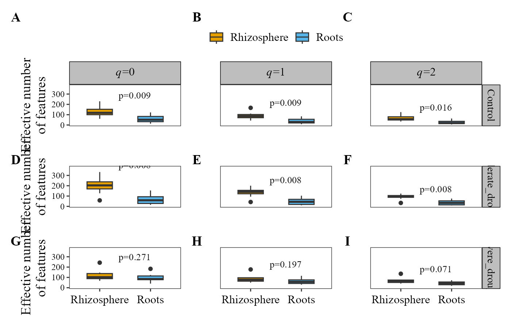

Computes the Hill numbers (q = 0, 1, 2) of each sample and plots them as box plots or bar plots, one panel per order q, optionally faceted by one or two metadata variables and with statistical comparisons between groups.
Usage
alpha_hill_plot(
table,
metadata,
type = "boxplot",
stat = NULL,
p_adjust_method = "holm",
x_col,
fill_col,
facet_by = NULL,
facet_by2 = NULL,
facet_orientation = "horizontal",
palette = "colorb",
group_colors = NULL,
n_cols = NULL,
n_rows = NULL,
strip_color = "grey",
show_legend = TRUE,
title = NULL,
legend_title = NULL,
legend_position = "bottom",
x_axis_title = NULL,
y_axis_title = "Effective number of features",
free_y = FALSE,
panel_label_case = "upper",
panel_labels = NULL,
panel_label_bold = TRUE,
x_label_angle = 0,
strip_text_bold = FALSE,
aspect_ratio = NULL,
save_table = FALSE,
table_filename = "hill.txt"
)Arguments
- table
A data frame with taxa in rows and samples in columns. The last column must be named
taxonomy, containing full taxonomic strings.- metadata
A data frame containing sample metadata. Its first column must hold the sample IDs (the column names of
table).- type
Type of plot:
"boxplot"(default) or"barplot". Case-insensitive.- stat
Character or
NULL. Statistical test to compare the groups within each panel."wilcox.test"or"t.test"compare every pair of groups, each with its own bracket and p-value (ggpubr::stat_pwc());"kruskal.test"or"anova"give one global p-value per panel. DefaultNULL(no test shown).- p_adjust_method
Character. Multiple-testing correction for the pairwise tests (
stat = "wilcox.test"or"t.test"), applied within each panel, any method ofstats::p.adjust(). Default"holm";"none"uses the raw p-values.- x_col
Character. Name of the column in
metadatafor the x-axis.- fill_col
Character. Name of the column in
metadatafor the fill color.- facet_by
Character. Name of the column in
metadatato facet the plot by. Optional;NULL(default) for no facets.- facet_by2
Character. Name of a second column in
metadatato facet by. Optional;NULL(default) for none.- facet_orientation
Character.
"horizontal"(default) puts thefacet_byfacets in columns;"vertical"in rows. Case-insensitive.- palette
Character. Palette name:
"colorb"(default, colorblind-friendly Okabe-Ito),"grey","viridis"or"brewer". Case-insensitive.- group_colors
Optional character vector of colors, one per group, named after the groups or in their order. Overrides
palette.- n_cols
Integer. Number of columns of the facet grid. If
NULL(default), set automatically.- n_rows
Integer. Number of rows of the facet grid. If
NULL(default), set automatically.- strip_color
Character. Background color of the facet strips (used when
facet_byis set). Default"grey".- show_legend
Logical. If
TRUE(default), the legend is shown.- title
Character. Plot title.
NULL(default) shows no title.- legend_title
Character. Title of the legend. If
NULL(default), the legend has no title.- legend_position
Character. Position of the legend:
"bottom"(default),"top","right"or"left".- x_axis_title
Character. Title of the x-axis. Default
NULL(no title).- y_axis_title
Character. Title of the y-axis. Default
"Effective number of features".- free_y
Logical. If
TRUE, the y-axis scale is free across facets. DefaultFALSE.- panel_label_case
Character. Case of the panel tags (added to every panel):
"upper"(default; A, B, C) or"lower"(a, b, c). Ignored ifpanel_labelsis given.- panel_labels
Optional character vector of custom panel tags, one per panel, used as-is (e.g.
c("(a)", "(b)", "(c)")). Overridespanel_label_case.- panel_label_bold
Logical. If
TRUE(default), panel tags are bold. Set toFALSEfor journals that require plain (non-bold) panel tags.- x_label_angle
Numeric. Rotation (degrees) of the x-axis labels. Default
0(horizontal); use45or90if they overlap.- strip_text_bold
Logical. If
TRUE, the facet strip labels are bold. DefaultFALSE.- aspect_ratio
Numeric. Aspect ratio (height/width) of each panel. Default
NULL(automatic).- save_table
Logical. If
TRUE, saves the Hill numbers table as a tab-delimited file. DefaultFALSE.- table_filename
Character. Name or path of the saved file (used when
save_table = TRUE). Default"hill.txt".
Examples
table_path <- system.file("extdata", "tabla_bacteria.txt", package = "MicroBioMeta")
table <- read.delim(table_path, row.names = 1, check.names = FALSE)
metadata_path <- system.file("extdata", "metadata_bacteria.txt", package = "MicroBioMeta")
metadata <- read.delim(metadata_path, check.names = FALSE)
# Panel tags (A/B/C) are always added (see panel_label_case and
# panel_labels to customize their case/format); stat additionally
# overlays p-value annotations on each panel
alpha_hill_plot(
table = table,
metadata = metadata,
type = "boxplot",
x_col = "Location",
fill_col = "Location",
facet_by = "Treatment",
legend_position = "top",
stat = "kruskal.test",
panel_label_case = "upper"
)
